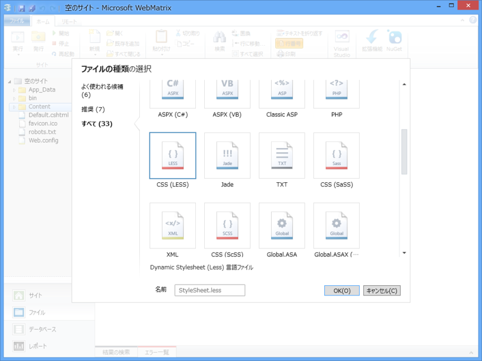
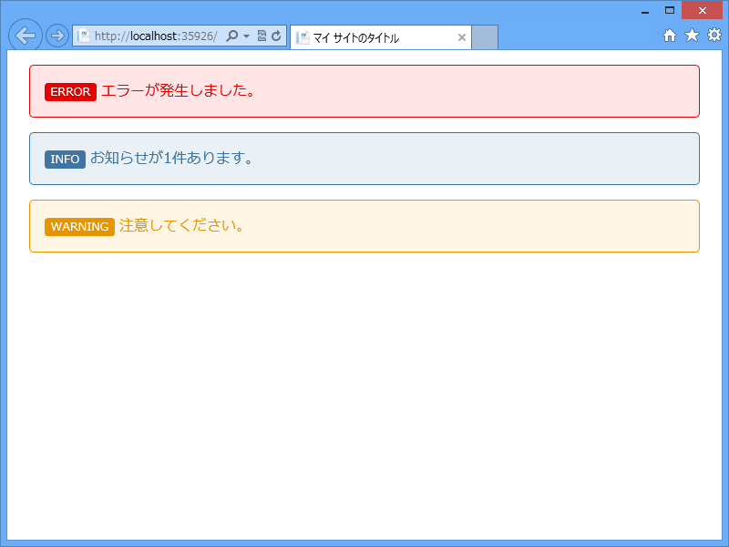
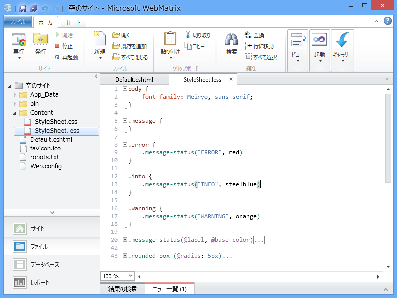

WebMatrix で LESS を使おう！（2）
公開日：

WebMatrix でユーザー認証機能（5） ―― ロール - だるろぐ なんかで使っているラベル用の CSS は LESS で書いている。変数とか関数とか使えないと、この程度の CSS を書くだけで簡単に破たんできるぜ……。
で、どうやって使うのかというと……例えば、
<!DOCTYPE html><html lang="ja"> <head> <meta charset="utf-8" /> <title>マイ サイトのタイトル</title> <link href="~/favicon.ico" rel="shortcut icon" type="image/x-icon" /> <link href="~/Content/StyleSheet.css" rel="stylesheet" type="text/css" /> </head> <body> <div class="message error"> エラーが発生しました。 </div> <div class="message info"> お知らせが1件あります。 </div> <div class="message warning"> 注意してください。 </div> </body> </html>
こんな cshtml があるとする。次に、新規作成のダイアログで［すべて］タブを選択し、LESS ファイルを作成する。

パスは ~/Content/StyleSheet.less （css → less にするだけ）だよ。あとはどんどん書いていくんだぜ～！ 保存するたんびに「OrangeBits Compiler」（後述）が CSS （~/Content/StyleSheet.css）へ変換してくれるから楽ちんでいい。
body { font-family: Meiryo, sans-serif; } .error { .message-status("ERROR", red) } .info { .message-status("INFO", steelblue) } .warning { .message-status("WARNING", orange) }
関数*1のおかげで、メインの部分はこんなにコンパクトだよ。ちなみに message-status というイケてない名前の関数の中身は、以下の通り。上のスタイルシートの続きに書いていく。だいたいそんな感じで使うんだなっていうのがわかると思う。
.message-status(@label, @base-color) { // 引数がとれる！ // 変数の宣言と組み込み関数による色の演算 @dark-color: darken(@base-color, 5%); @light-color: lighten(@base-color, 45%); border: 1px solid black; border-color: @dark-color; color: @dark-color; background-color: @light-color; margin: 1em; padding: 1em; .rounded-box(); // <- スタイルの Mixin // ネストしたスタイルの指定 // & はちょっと特殊な変数（？）で、現在の要素を表す // &:before を .label で使うと .label:before になる &:before { content: @label; font-size: 80%; color: white; background-color: @dark-color; padding: 0 0.5em; .rounded-box(3px); } } .rounded-box (@radius: 5px) { // <- 超便利じゃない？ border-radius: @radius; -webkit-border-radius: @radius; -moz-border-radius: @radius; }

こうやってまとめられるところはまとめておくと、CSS が肥大化してもメンテナンス性・可読性への影響が少ないんじゃないかな。

邪魔ならみえないように折りたたんでおくこともできるしね。
WebMatrix 2 では、追加で「Orangebits Compiler」を導入することで、この LESS が簡単に扱えるようになっているのでぜひ試すべし。
*1:Mixin（ミックスイン）っていうのかな？